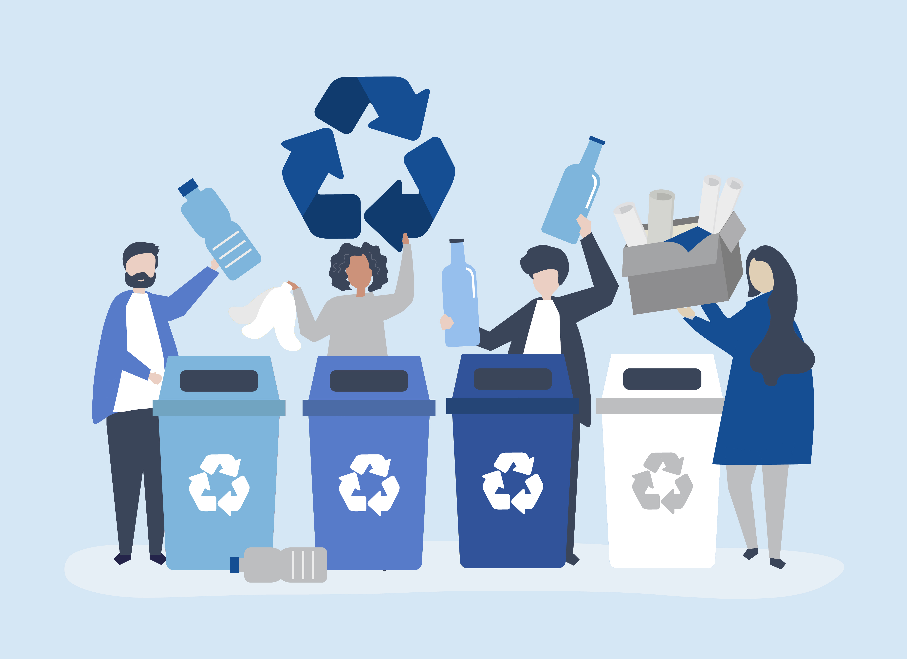
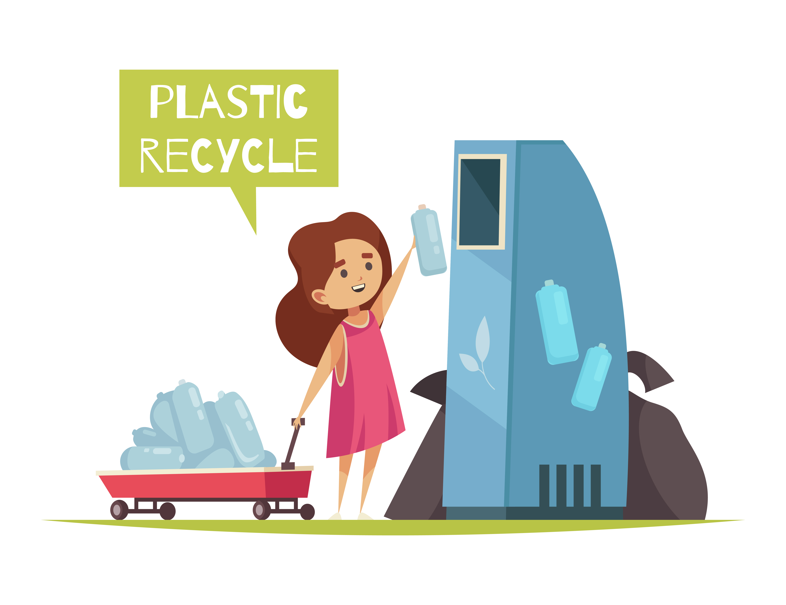
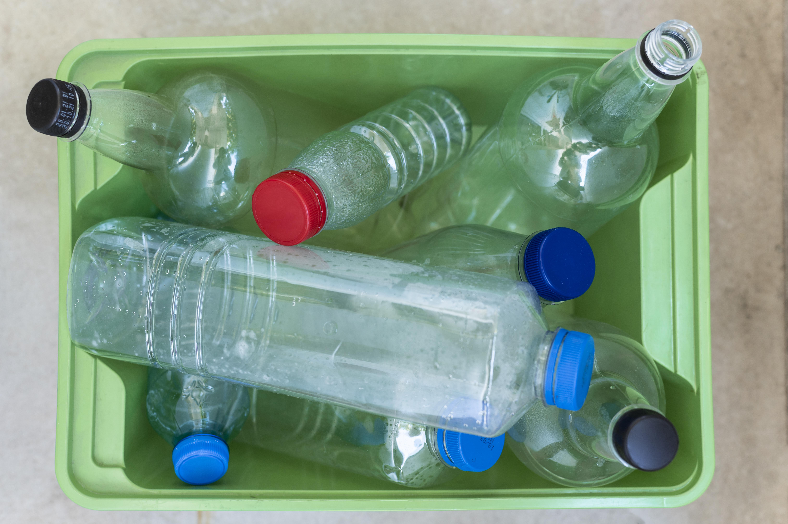

Envases de bebidas
Una de las aplicaciones más comunes del PET es en la fabricación de botellas y envases para bebidas como agua, refrescos, jugos y bebidas deportivas.

Envases de alimentos
El PET se utiliza en la fabricación de envases para alimentos como bandejas, envases para ensaladas, envases para productos deli y más.

Textiles
El PET reciclado se utiliza en la fabricación de fibras textiles, como las utilizadas en la ropa deportiva, camisetas y otros productos textiles. Estas fibras se conocen como "poliéster reciclado"

Fibras y envases no alimentarios
También se utiliza en la fabricación de fibras para textiles no alimentarios, como textiles para el hogar y productos industriales como cinturones de seguridad y lonas.